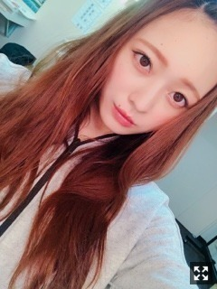
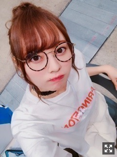

簡単なことはなにもない
皆様こんにちは！！
乃木坂46 ３期生の
梅澤美波です！！

おでこ。
かなりレアかと。
選抜発表がありました。
今回私は２列目の真ん中に
呼ばれたときは
一瞬時が止まったような感覚というか
記憶にないくらいの感覚というか。
嬉しいという感情を得られるほど
心に余裕はなくて
実感もなく
ただただ頭の中が混乱していました、、
こういうとき、
真っ先にマイナスな未来を考えてしまう私の性格では、心の中はぐちゃぐちゃでした
時間が経った今は
とても前向きな気持ちです。
それに、嬉しいと今は感じられています！
とても嬉しいです！幸せです。
そして、
皆様への感謝の気持ちが
どばどば溢れてきています、
早くファンの皆様のお顔が見たい
私のアイドルとしての始まりは
１番後ろの１番端っこでした。
ずっと後ろからの景色を
いろんな感情を持ちながら見ていました
それと同時に
きっとどこか任せっきりにしてしまっていた部分もあったと思います
苦しかったりもしたけど
今の私にはこの位置が見合っているんだと思って活動する毎日でした。
いつかあの景色を、、と思いながら！
私はきっと誰よりも普通の人です（笑）
自分で誇れる部分が無いです。
けど、出来ることは自分なりに
コツコツ頑張ってきたつもりでした
少しずつ、少しずつ
わたしのペースで！
３期生曲では３列目から一気に
フロントに立たせて頂いたりもしました！
加入してすぐに
３期生を応援してくださっている方からしたら
私の環境の変わり方の凄まじさに気づいてくださると思います。
私がこんなに心も環境も成長でき
前向きになれたのは
紛れもなくファンの皆様の力が１番に大きい！
３列目にいた頃から
あまり目立っていなかった私を
どこからか見つけてくれて
会いに来てくれて
前へ前へ背中を押してくれた。☺︎
選抜発表を受け、
ファンの方に届くまでの間、
握手会があったのだけど
一人一人の顔を見ながら
この方達のおかげで
私は頑張れたんだなって
そんなことを考えながら握手してたよ〜（笑）
涙が出そうになった時もあったな〜
今まで会いに来てくれた
初期から支えてくださった方を含め
今も変わらず会いに来てくれる方、
そして、遠くから応援してくれてる
皆様の力のおかげです。
本当に、１番にありがとう。
２１枚目で活動する中での目標は
「自信をつける」！！
今の私に１番必要なモノだと思います
２列目の真ん中、
生駒さんがいらっしゃったポジション
全体の中心のポジション
とてもプレッシャーもあります。
けど、
先輩方に囲まれ、そして
両サイドには心強い同期。
なにも不安に思うことは無い、
自分らしく頑張ればきっと大丈夫☺︎
なぜ今私がここに立つのか
与えられた場所の意味も考えながら
活動していきたいです
実力も飛び抜けた才能も
何も無い私だけど
とにかくがむしゃらに頑張ります！
一緒に前を向いて歩いてくれたら
私はとっても幸せです。☺︎
ここで終わらせないように頑張るから！
改めて、
本当にいつもありがとうございます。
これからも一緒に
たくさんの景色が見たいです！
まだまだ、目指すものは沢山あります
迷走したりもするけど
今はグループのために頑張りたい！
身長高いアイドルは
偏見を持たれることが多いですが
少しずつそれを挽回していきたい、
こんな形のアイドルもあるんだぞ！と。
２列目の真ん中にデカいのいるけど
中々いいじゃんいけてるじゃん！て
たくさんの人に思ってもらえるように
身長高いアイドルはどうとか
そんなの崩してやる！
ってくらいの強い気持ちを持って。
私は前を向きます！
ありがとう、見つけてくれて
笑顔でいればきっと大丈夫だよね☺︎
梅澤、全力で頑張ります！！
今年の夏は
というか今もう真っ最中ですが
やらなければいけないことが山ほどあって
今は余裕がない不安ばかり、
最近は冷静でいられないことばかりです。
でも、今のこの経験が
これからの私をきっと変えてくれる！
今、とても幸せだなと実感しています。
一回りも二回りも
梅澤はパワーアップしたい！！

素敵な思い出が沢山出来ますようにっ
書けていなかった握手会のことやら
告知やら更新します！
おやすみ！！
いつもいつも本当にありがとう☺︎
みんながいれば何も怖くないです！
私のパワーの源です。これからもよろしくねっ
Original：https://www.nogizaka46.com/s/n46/diary/detail/45841?ima=4952&cd=MEMBER